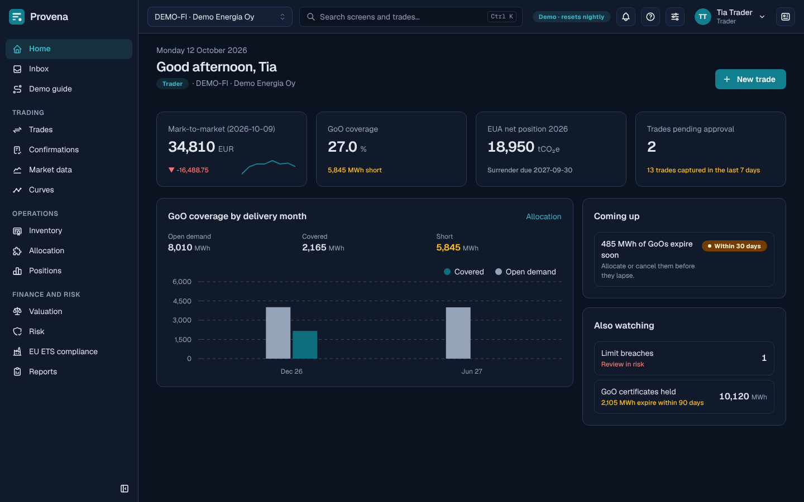
Provena
Certificates and allowances, from trade to ledger
A trading and risk system for guarantees of origin and EU emission allowances, built for audited, regulated operations.
1 / 18 · Speaker notes
One system that follows a certificate from the trade to the registry, the invoice and the general ledger. The first part shows the product on its real screens, running on fictitious data; the second shows how it is built for reliability, security, robustness and maintainability, and the roadmap to production.
The problem
Why this is hard
Certificates are ranges
A guarantee of origin is a range of numbers with attributes: country, source, technology, age and support.
Sales name criteria
A sale says which certificates qualify, not which lots; any lot that matches can deliver.
Registries differ
The Union Registry, national GoO registries and the AIB hub, through files, APIs and manual steps.
Two people, fixed dates
Every step that moves value needs a second person, and compliance deadlines are set by law.
Provena · 2
2 / 18 · Speaker notes
Spreadsheets break on exactly these points: criteria matching, registry state and four eyes.
One system
Every role, one inbox
Trading, operations, finance, risk and administration in one application.
One inbox for every approval, with its four-eyes checks shown.
Each role has its own home page and its own work.
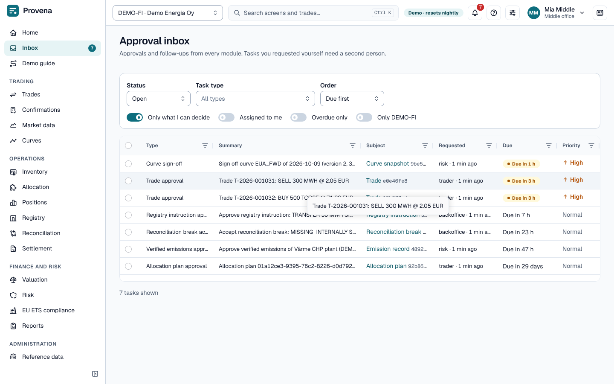
Provena · 3
3 / 18 · Speaker notes
Eleven personas in the demo, two for every approving role, so both sides of four eyes can be played.
Trading
Capture, approve, confirm, deliver
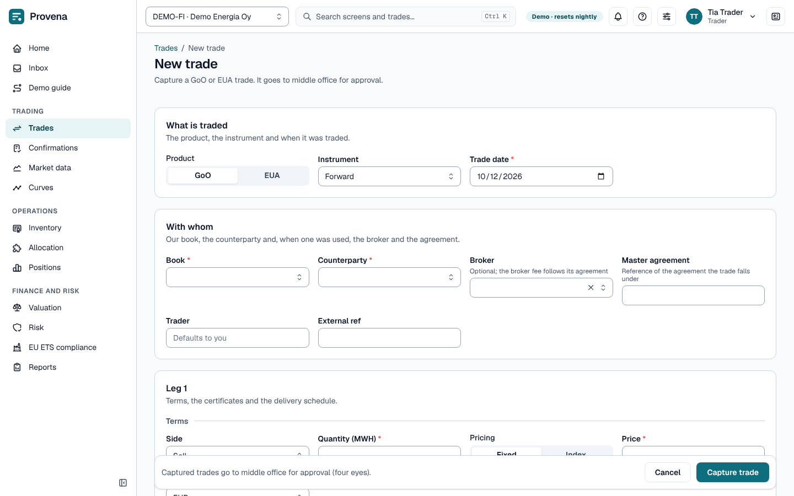
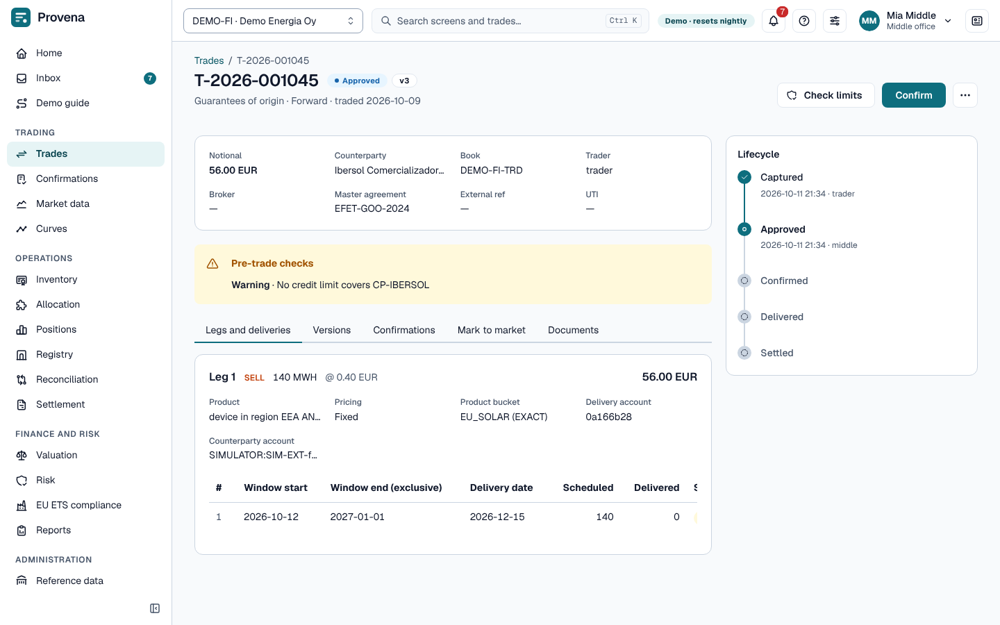
Forwards, spots and futures; fixed or index prices.
Pre-trade limit checks, then approval by a second person.
Confirmations matched field by field; delivery and settlement.
Provena · 4
4 / 18 · Speaker notes
Brokers, master agreements and intercompany mirror trades are covered too. The capture form checks what it can; the server validates everything and explains refusals per field.
Inventory and allocation
The right certificates for every sale
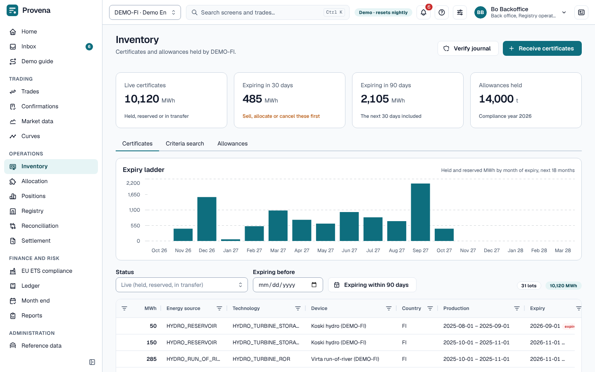
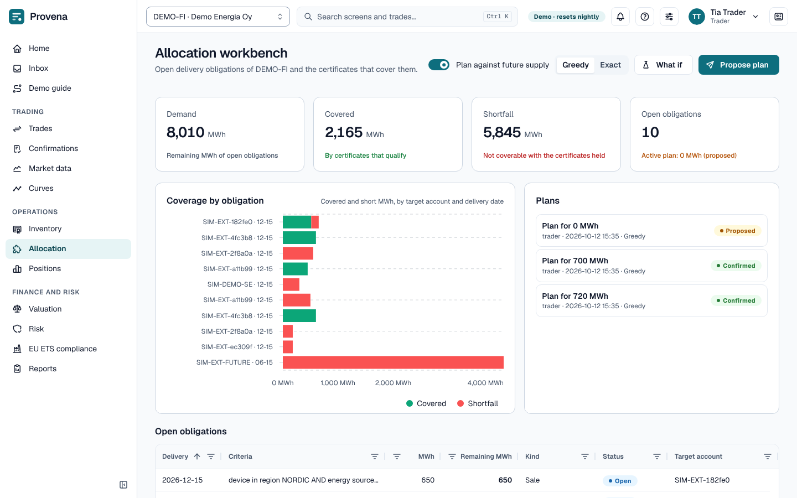
Lots with all their attributes and a hash-chained journal.
One criteria builder for trades and searches.
Greedy or exact (CP-SAT) allocation, with what-if.
Provena · 5
5 / 18 · Speaker notes
Coverage is computed as a maximum flow. What-if runs without storing anything. An approved plan reserves the lots and creates the registry instructions.
GoO portfolio management
The book as a portfolio, not a list of lots
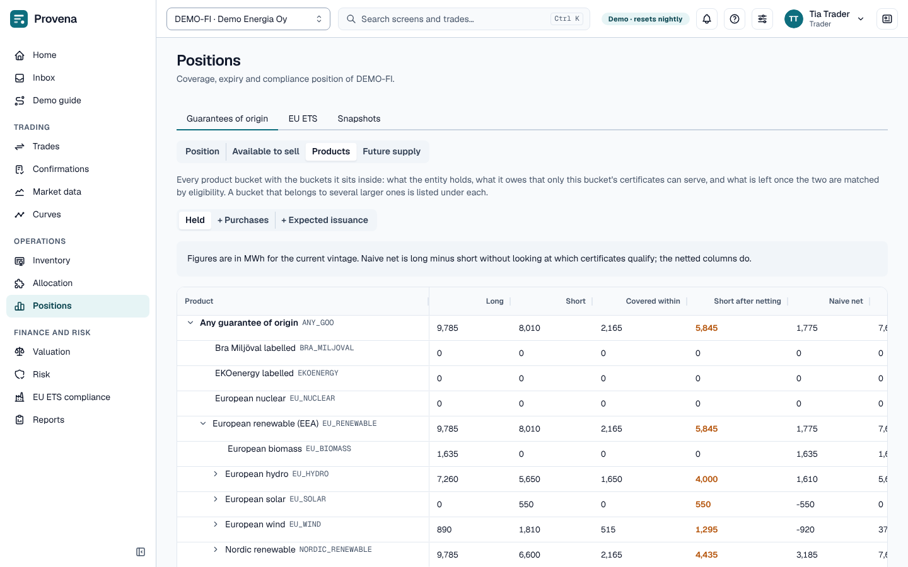
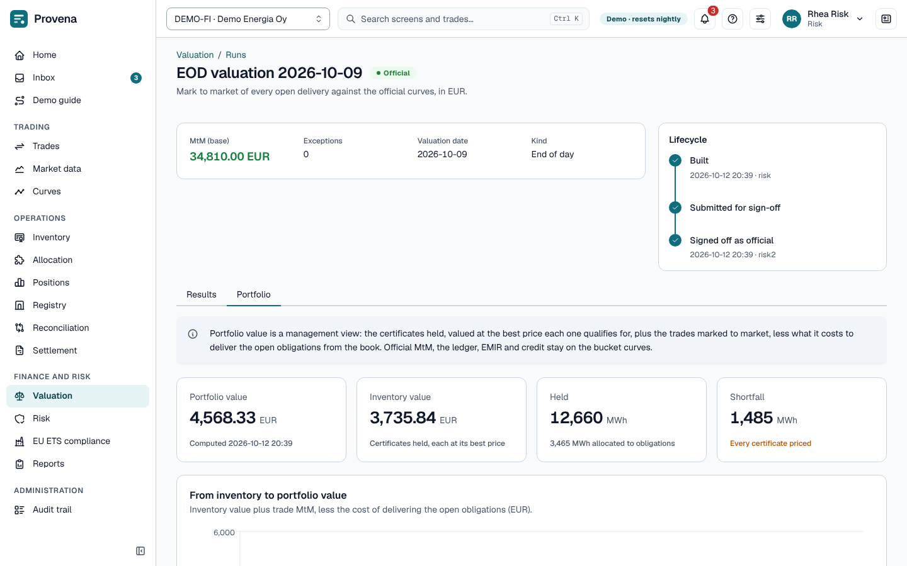
Specific certificates serve generic sales: allocated by value, with the give-away shown.
Available to sell, a product tree netted through eligibility, and future supply.
Portfolio value next to each run, and limits on concentration, expiry and basis.
Provena · 6
6 / 18 · Speaker notes
A Nordic hydro certificate can deliver a generic EU renewable sale, but not the reverse. Allocation values each certificate at the best price it qualifies for and reports the premium given away. Available to sell reroutes existing sales where another certificate serves them as well. Purchases and expected issuance count as supply tiers, and plans can rely on them with virtual lines. Portfolio value and cheapest to deliver are a management view: official MtM, the ledger and EMIR stay on bucket curves.
Registry and reconciliation
Every transfer accounted for
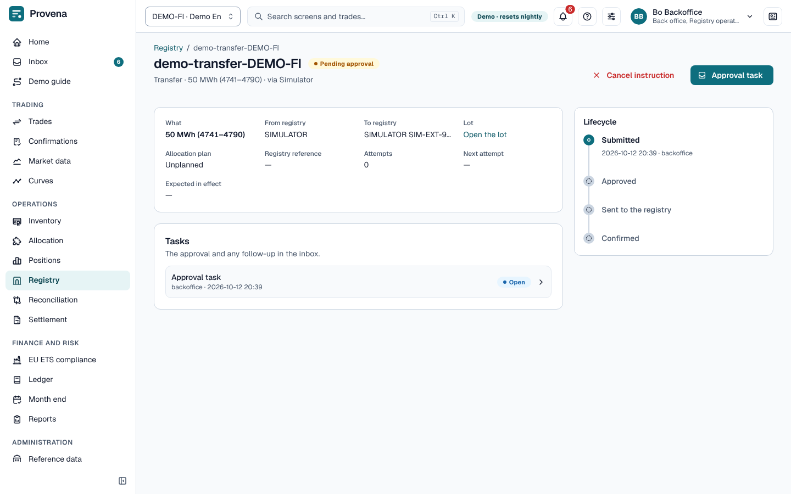
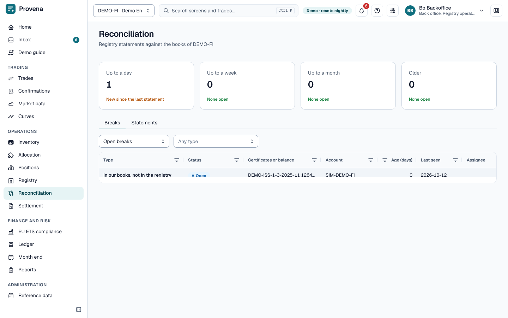
Instructions stored first, sent afterwards; retries are safe.
Registry statements reconciled with our books.
Each difference is a break with an owner and an outcome.
Provena · 7
7 / 18 · Speaker notes
Registry calls never run inside a database transaction. Registry mappings that are not checked against the registry's own specification are marked unverified.
Market data, valuation and risk
Prices a second person signs off
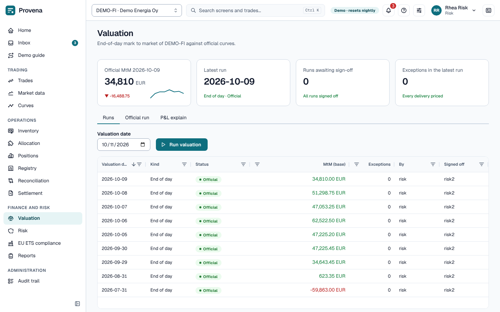
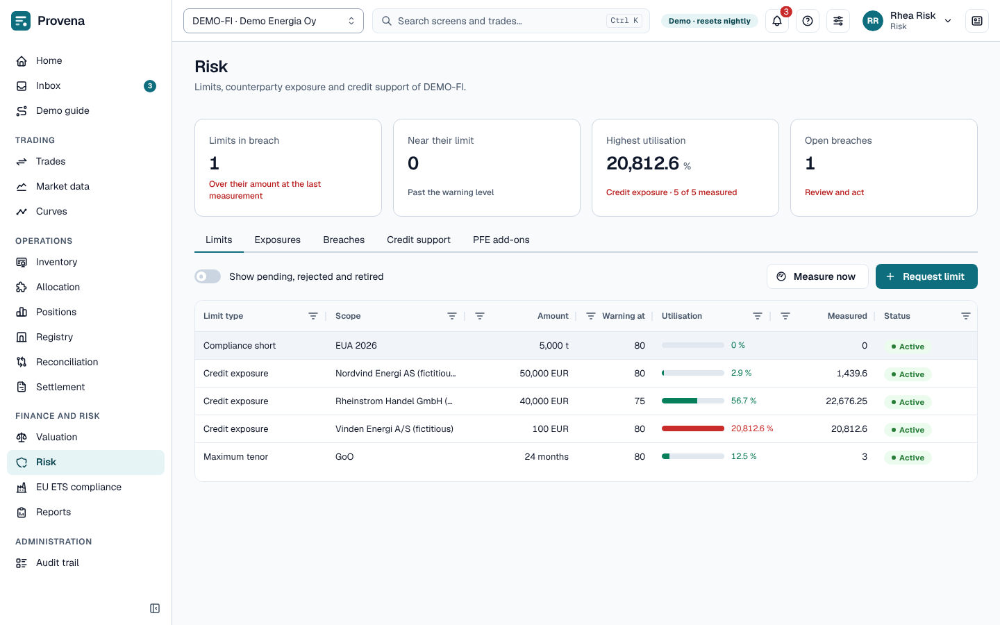
Curves become official once a second person signs them off.
Official end-of-day valuation and P&L explain.
Limits, utilisation, breaches and credit support.
Provena · 8
8 / 18 · Speaker notes
Quotes, FX rates and indices come from one place; no other module stores prices. P&L explain splits the change between runs into new trades, amendments, deliveries, price and FX moves.
Settlement and EU ETS
Invoices and compliance
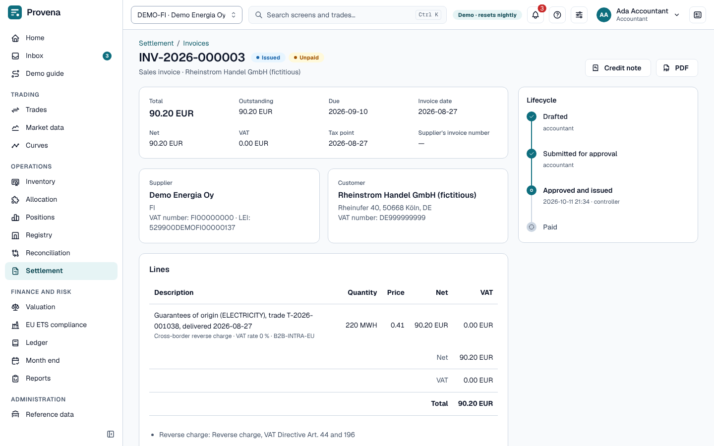
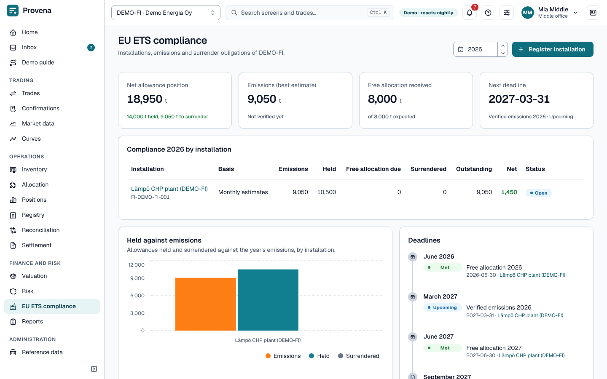
Deliveries become invoices, approved by a second accountant.
Payments, netting and VAT rules, reverse charge included.
Emissions, free allocation and surrenders per installation.
Provena · 9
9 / 18 · Speaker notes
Invoice numbers are gap-free and every invoice has a PDF with a stored hash. EU ETS deadlines show up on the home page of the people who act on them.
Finance and control
Books an auditor can follow
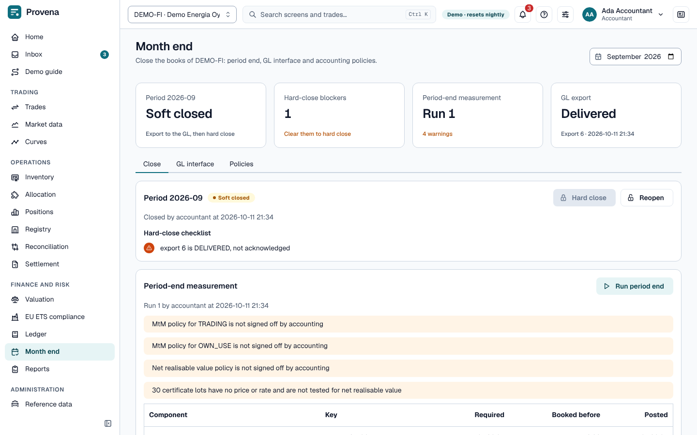
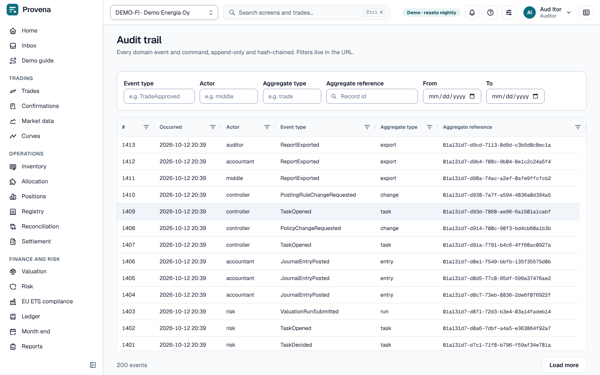
Posting rules feed an append-only, hash-chained journal.
Month end: period end, soft and hard close, GL export.
An audit trail of every change: who, when and why.
Provena · 10
10 / 18 · Speaker notes
Corrections are made by reversal, never by update. The hard close waits until every GL export is acknowledged and nothing is pending.
Architecture
One application, eighteen bounded contexts
Provena · 11 · Registry calls go through an outbox, GL exports are exactly-once, events leave only after commit
11 / 18 · Speaker notes
A modular monolith: one deployable and one database, with the discipline of separate services. Each of the eighteen modules is a bounded context with its own schema and migrations. Another module may only use its published api package, and the build fails on any other dependency. Side effects across modules travel as domain events inside the command transaction; selected events leave for Kafka only after commit. Registry calls never run inside a database transaction: they are written to an outbox first. The web UI is bundled into the same jar, and the OpenAPI document between them is a committed contract.
Reliability
Designed to targets, measured, rehearsed
99.9 %
availability target in business hours
15 min
recovery point; recovery time 4 hours
556/s
requests under stress, 104 users, no errors
15 ms
read p95 at baseline load (target 300 ms)
Stateless, highly available
Horizontal scaling on Kubernetes; PostgreSQL as a three-instance cluster with a synchronous replica.
Recovery rehearsed
A monthly drill restores a backup, compares row counts and verifies the hash chains.
Observable
Prometheus metrics, OpenTelemetry traces, structured logs, a trace id on every response.
Provena · 12 · Load figures: k6 against the application with the demo data
12 / 18 · Speaker notes
The targets come from the architecture plan: 99.9 per cent in business hours, RPO 15 minutes, RTO 4 hours, reads under 300 milliseconds at p95. The load figures are measured with k6: the baseline profile of 27 users has a read p95 of 15 milliseconds and a write p95 of 60; the stress profile of 104 users without pauses reached 556 requests a second with no errors. Recovery is a script, not a document: the DR drill backs up, restores, starts the application on the copy and verifies the lot and ledger hash chains. The one rehearsal still open is a drill against a production backup.
Security
Least privilege, two people, a checked supply chain
Identity and access
Single sign-on with OIDC. Every read and command checks the role and the legal entity it touches.
Segregation of duties
Four eyes on everything that moves value, enforced in the services and again by the database.
Hardened web tier
Strict content security policy, CSRF protection, formula-safe exports; ZAP and accessibility checks.
Supply chain
SBOMs for every build; the image is scanned and a critical fixable flaw stops the release.
Provena · 13 · Threat model documented; external penetration test prepared (scope, accounts, rules of engagement)
13 / 18 · Speaker notes
Authorisation is never left to the screen: the API checks every request, by role and by legal entity, and the screens only hide what the user cannot do. Four-eyes rules are written twice: in the service, which refuses a requester approving their own request, and as database checks, so no path around the service can break them. Every CI run publishes CycloneDX SBOMs for the backend, the web bundle and the image, and Trivy blocks the image on a critical vulnerability with a fix available. Dependabot proposes updates weekly; majors the tooling cannot take yet are held back with the reason written down. The external penetration test is prepared and is the next step before production.
Robustness and data integrity
A system of record that cannot quietly drift
Append-only, hash-chained
Lot journal, ledger and audit trail are protected by triggers. Errors are reversed, never edited.
Exactly-once effects
Registry calls through an outbox; idempotent deliveries and GL exports; a timeout is reconciled, not resent.
Reproducible as of any date
Bitemporal lots, prices and reference data; every report run is logged with its content hash.
Failures stay contained
A downstream problem is parked for attention; exact decimals only, no floating point in the domain.
Provena · 14 · Registry statements are reconciled against the books; each difference becomes a break with an owner
14 / 18 · Speaker notes
Robustness here means the books cannot drift without someone noticing. The lot journal, the ledger and the audit trail can only be appended to, and each row carries the hash of the one before, which the DR drill verifies. Registry instructions are written to an outbox in the business transaction and sent afterwards, so a crash never loses or duplicates one; a timeout becomes an unknown outcome that reconciliation resolves. When a delivery reaches a listener that cannot process it, the problem is parked as needing attention instead of rolling back the delivery itself.
Maintainability
Boundaries and contracts the build enforces
Module boundaries
Each module owns its schema and exposes one API package; any other dependency fails the build.
Contracts
The OpenAPI document is committed; the web client's types are generated from it, never written by hand.
Decisions on record
43 architecture decision records, arc42 documentation and a user manual inside the application.
Strict by default
Warnings are errors; static analysis, a coverage rule, and main moves only on a green pipeline.
Provena · 15 · Current stack: Java 25, Kotlin 2.4, Spring Boot 4, Gradle 9, React with TypeScript
15 / 18 · Speaker notes
A modular monolith keeps the cost of one deployable while keeping the discipline of services: modules are bounded contexts with their own schema, and Spring Modulith verifies in every build that they only use each other's published API. The OpenAPI document is a contract: changing a controller means updating the committed snapshot, the web types are regenerated from it, and a check fails when an operation has neither a screen nor a recorded reason. Every significant decision is an ADR. Dependencies are kept current: increment 9 moved CI off the retired Node 20 and took the major versions of Gradle, Kotlin, Flyway, react-router and ESLint.
Roadmap
Eleven increments, each one shippable
| Inc. | Delivered |
|---|---|
| 1 | Core domain: products and criteria, trades, inventory, allocation, positions, ledger, audit |
| 2 | Registry integration, reconciliation, settlement and invoicing, confirmations, approval inbox |
| 3 | Market data, curves, valuation, risk and credit, ETS compliance, period end, reporting, GL |
| 4–5 | Web UI for every area, including the operations screens |
| 6 | Operations at scale: observability, supply chain, Kubernetes, HA database, load tests, DR |
| 7 | Showcase: design system, six months of demo data, in-app manual and guided tours |
| 8 | GoO portfolio: value-based allocation, available to sell, future supply, portfolio value, limits |
| 9 | Housekeeping: current dependencies, versioned releases and images, enterprise documentation |
| 10 | Portfolio follow-ups: figures patched in under a second, fast checks, GoO limits by vintage, give-away report |
| 11 | Valuation depth: discount curves and discounted MtM, time and rates in the explain, cash flow hedge accounting |
Provena · 16 · Every increment ends green: full build, end-to-end tests, image scan, then main
16 / 18 · Speaker notes
The system was built in increments that each ended in a working, tested release. The first three built the domain and the back office without a screen; four and five put every area on the screen; six made it operable at scale; seven made it demonstrable; eight turned the GoO book into a managed portfolio; nine is housekeeping and this documentation; ten made the portfolio figures fast enough for a production-size book; eleven discounts MtM to payment and accounts for cash flow hedges. Each increment has its plan, its milestone list and its decision records in the repository.
Path to production
What remains needs a partner, not more code
Assurance
- External penetration test and retest
- DR drill on a production backup
- ETS deadline rules checked by compliance
Specifications
- Registry APIs (G-REX, NECS) and AIB code lists
- The receiving GL's file layout
- EMIR field layout and trade repository
- Market data vendors
Sign-offs
- Accounting policies: MtM by book type, NRV, provision
- VAT rules
- PFE add-ons
Next to build
EUA futures margining and options; minimum shares checked against available to sell; fair value hedges.
Provena · 17 · Unverified external layouts are marked verified = false until checked against their specification
17 / 18 · Speaker notes
The open items before production are inputs from outside the codebase. The integration points exist and are tested against stubs; layouts that have not been checked against the counterparty's own specification are flagged unverified, so nothing pretends to be certified. On the build side, increment 10 delivered the portfolio follow-ups (figures patched in place, GoO limits per vintage, the give-away report); the next candidates are discounting and hedge accounting, futures margining, and checking minimum shares against available to sell.
In numbers, and try it
Evidence you can run yourself
339
backend unit and integration tests
296
web UI component tests
82
browser journeys with accessibility checks
286 / 303
API operations with a screen; the rest have a recorded reason
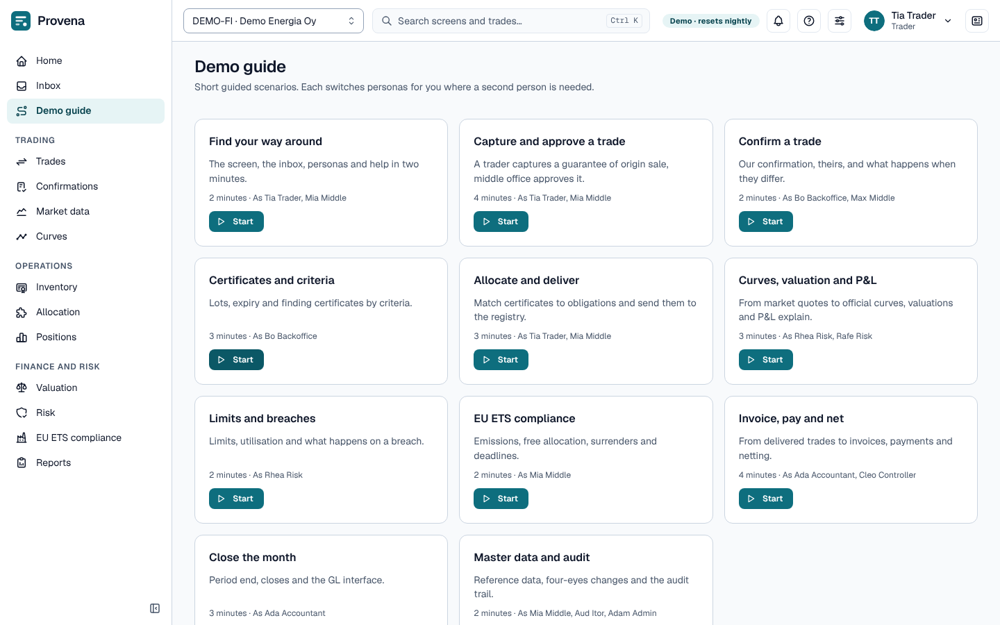
The demo with guided tours and a manual in the app, or your own copy with Docker in minutes.
Provena · 18 · Counted on the build of October 2026 · github.com/Pianonurmi/goo-ets-etrm
18 / 18 · Speaker notes
Every number on this slide comes from the build itself: 339 backend tests including the end-to-end business scenarios, 296 component tests for the web UI, and 82 Playwright journeys that drive the real application in a browser with accessibility and content-security checks. A check in the build fails when an API operation has no screen and no recorded reason. To try it, use the public demo with a guided tour, or run the same image yourself from ops/demo with Docker Compose. Close with the demo URL and the repository.